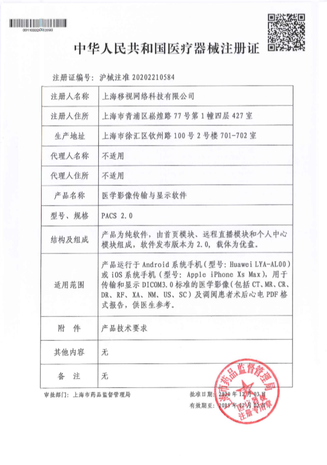
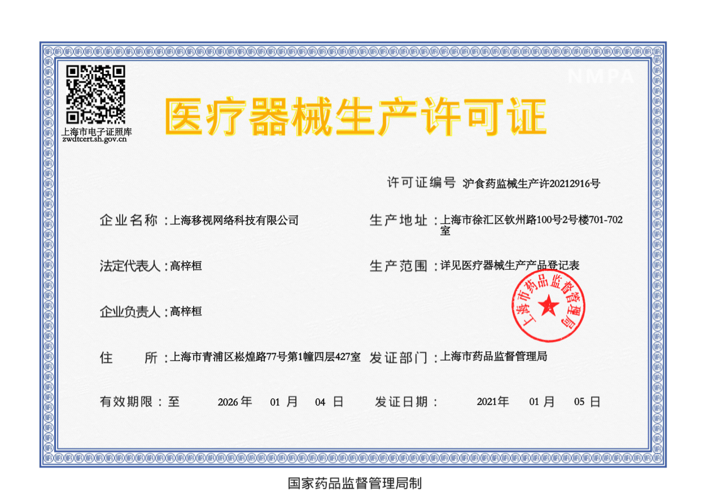
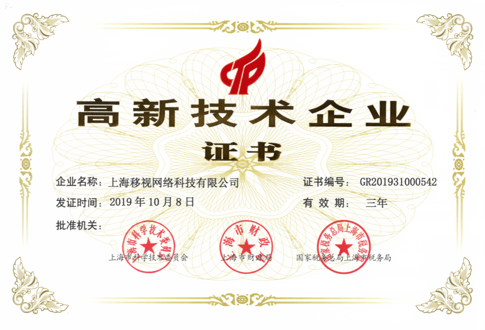

上海移视网络科技有限公司，成立于2015年，于2019年获得高新技术企业认证，编号：GR201931000542。
公司专注于心脑血管疾病领域人工智能技术的应用和开发。
院外依托人工智能自动预警可穿戴设备；
院内构建人工智能预警与监控判读中心体系；
联合知名三甲医疗机构，为心脑血管疾病患者、心脏康复人群、亚健康人群，提供全生命周期数据挖掘和风险评估的远程医疗健康管理服务。
先后参与上海市三年行动计划与国家科技部重点研发973项目（课题编号：2017YFC0111802），建立了院外实时预警心电系统，首创了院间心血管信息管理移动平台。
通过云数据服务，AI算法，居家与诊疗环境下的可穿戴设备，形成院前预警，院间联动，院后监护的全周期健康解决方案。
公司是由美国GE公司Healthcare中国区医疗药代动力学研究中心（Pharmacokinetics Research Centre - PKRC）创始人、GE药业精准医学学院(Institute of Precision Medicine - IPM)创始人协技术团队一同创立的。所在团队共同研究发表87篇SCI，影响因子 231.6（截至2020年5月）。个人co-author文章23篇SCI，影响因子70.4（截至2020年5月）。内容研究涉及心血管，神经，肿瘤，肝脏，骨肌等医学影像诊断、临床路径指导及人工智能领域。
公司心电数据处理算法是基于2020年4月于International Journal of Cardiology发表的急性心肌梗死自动预警研究Early detection of ST-segment elevated myocardial infarction by artificial intelligence with 12-lead electrocardiogram注册ALERT临床研究（NCT03317691），并获得美国加州洛杉矶分校Ivan Rokos教授同期述评称这是人工智能算法助力急性心肌梗死救治自动预警系统的“Shanghai Algorithm”；并获得十二导联心电领域前三个CNN卷积神经网络算法的“基于CNN神经网络的急性心肌梗死定性（ZL 201810835499.6）、定时期（ZL 201810839194.2）、定位（ZL 201810837033.X）自动判别系统”3个AI发明专利；心肌梗死心电图数据训练及标注基础基于上海第十人民医院，上海长海医院，上海中山医院三家三甲医院及其若干医联体医院的10年内患急性心肌梗死患者，且所有数据包含每个患者后期DSA血管造影数据作为金标准进行对照。数据入组、收集及标注方法唯一并先进。且于数据中心建立算法训练后台，在产品应用过程中可不断迭代。2019年8月在法国巴黎，应用入围ESC2019全球五大医疗+AI应用，并在决赛角逐中荣获全球总决赛第二名；2019年在以色列特拉维夫的世界心血管创新大会上口头演讲，基于可穿戴心电监测设备+人工智能算法的心肌梗死预警系统。
国内首创基于信息融合技术的“移动、标准”院际急性心梗救治网络。针对区域间医疗不平衡，首次在移动端实现院间不同制式医学影像设备多模态融合，利用数据迁移算法和远线存储技术建立标准化，移动化，脱敏化的心血管数据处理和信息管理系统。该移动PACS2.0系统已获医疗器械注册证（沪械注准20202210584）。通过非失真压缩技术将原始医疗数据无损的实时调阅，跨时间、地域传输，形成AI算法所需数据的清洗、标注、建模、统计平台，实现手术示教、转播，远程会诊等方案，并完成上海-巴黎、上海-摩洛哥等5G场景手术直播。应用于40家区域内医疗中心，提高区域内心梗救治水平。该技术支持合作医院获中华医学科技进步二等奖。
在医疗器械产品注册端，目前第2个产品动态心电血压血氧工作站已在医疗器械检测所检验，预期2021年Q3获得医疗器械注册证；第3个产品十二导联无感电极心电衣（动态心电图记录器）将于2021年Q4获得医疗器械注册证。
知识产权方面，目前已拥有发明专利3项，实用新型专利1项，软件著作权证12项；5项发明专利进入实质审核阶段。
2019年-2020年获得科技型中小企业入库编号，2021年已完成申报；2019-2020年连续2年获得上海市科委创新基金项目立项暨“第八届/第九届创业在上海”上海市优胜企业奖 并于2019年入围电子信息行业全国总决赛并获得优胜奖；2019年11月获得青浦区第四届创业大赛一等奖。
相关证书


